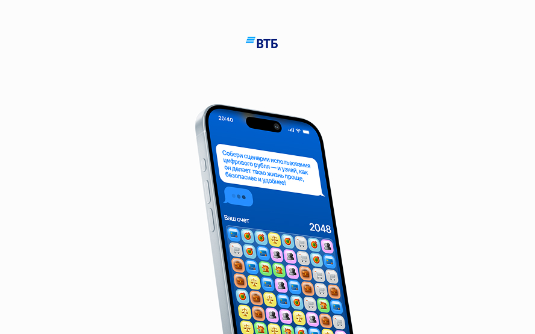
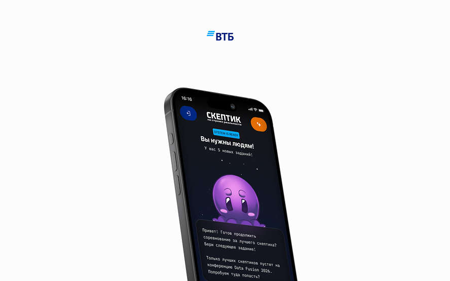
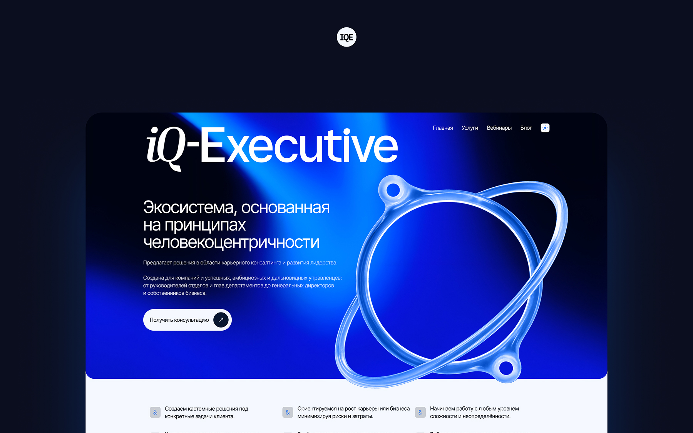
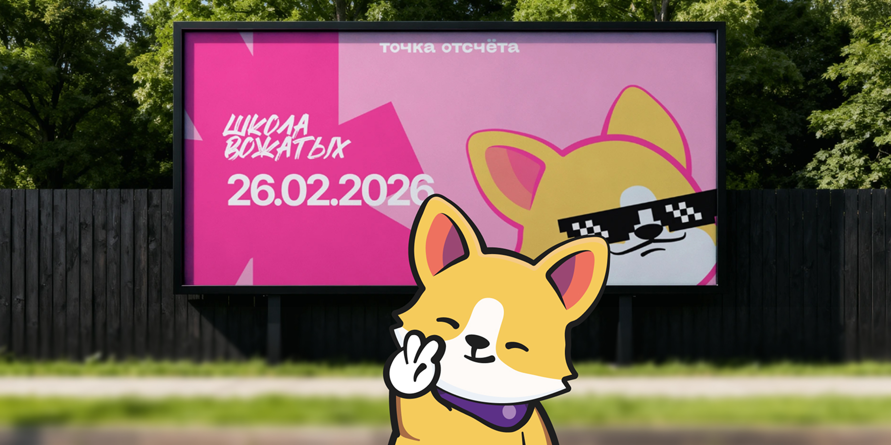
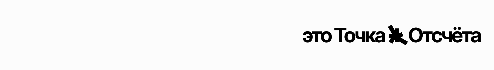

Holivita, это про здоровье.
Короткая, но интересная история о том как я усилил команду удобным инструментом
Проектирую интерфейсы, которые приносят пользу бизнесу и не бесят людей. Навожу порядок в хаосе, люблю типографику и умею делать так, чтобы разработчики и дизайнеры жили дружно.
Думать о пользователе, следовать правилам, избегать темных паттернов - это все конечно круто. А как насчет нарисовать паспорт на одном из этапов регистрации? Горжусь этим решением, получилось изящно и понятно.

Короткая, но интересная история о том как я усилил команду удобным инструментом
Вдохновившись геймификацией в рамках мед. интерфейса я задумался о создании небольших игровых проектов. Так на свет появились “Три рубля” и “Детектив Реальности”.


Игровые проекты совместно с ВТБ, которые приятно вспоминать.
Проект с которым у меня сохранилось много теплых воспоминаний, здесь я сделал большой редизайн и предложил новое позиционирование бренда.

Смелые решения, с которыми бренд задышал по-новому.
Мне нравится создавать качественную и действительно визуально приятную историю для брендов. Результатом такой совместной работы зачастую являются самые душевные и стильные бренды.

Это дизайн-дитя которое выросло и стало
чем-то большим чем просто несколькими макетами.
